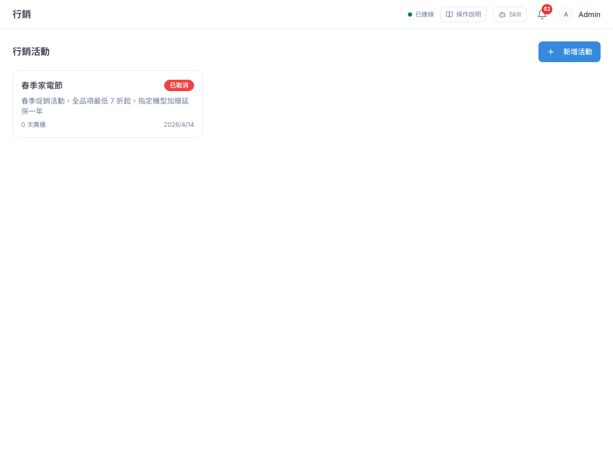
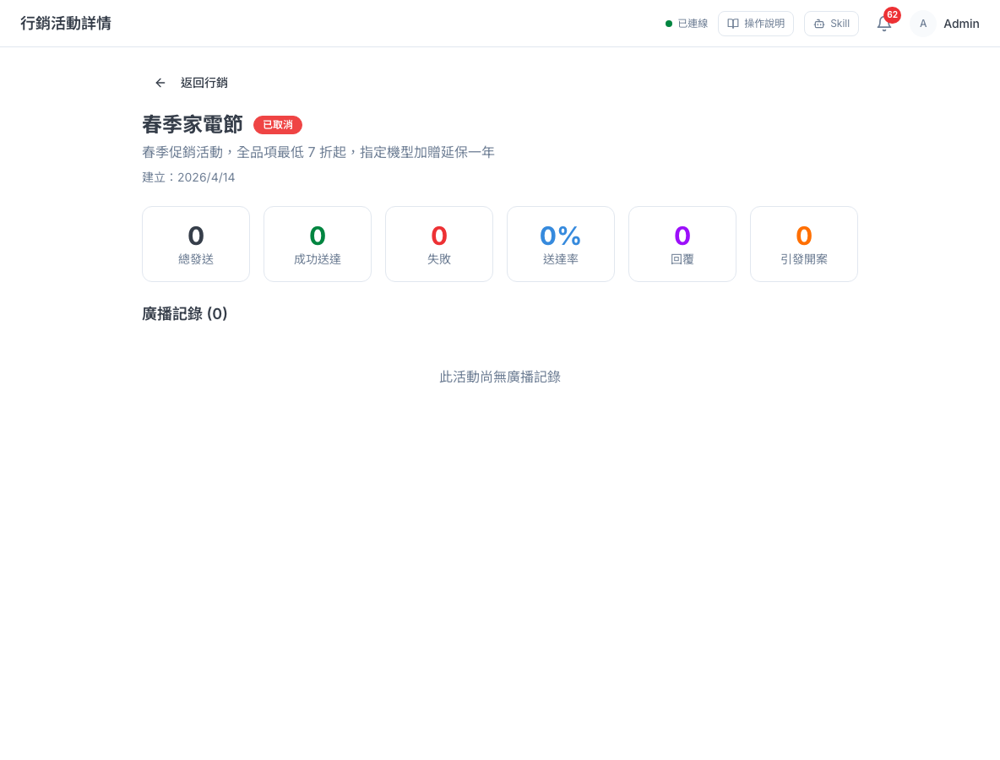
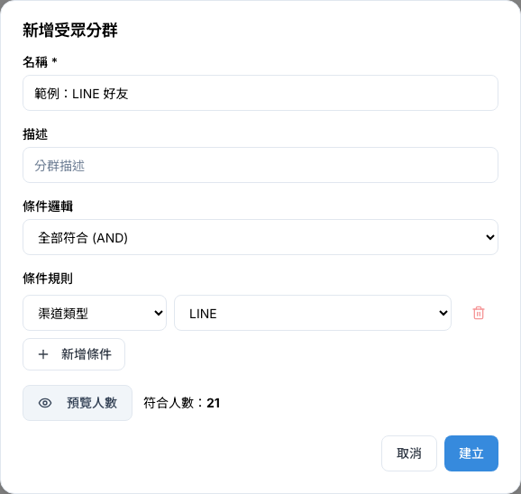
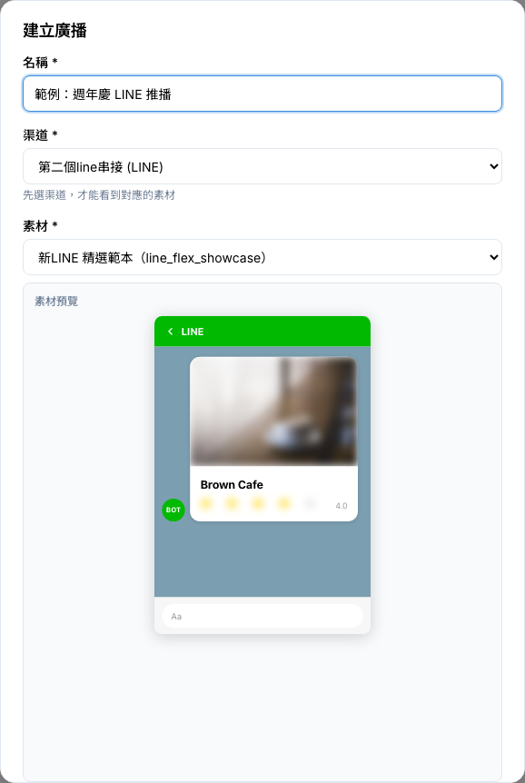
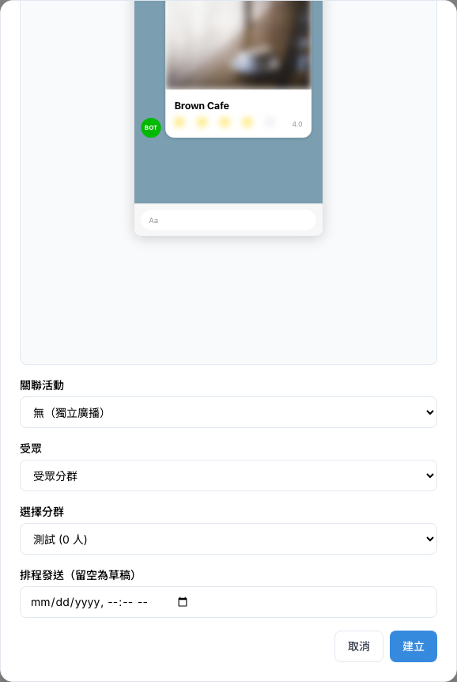
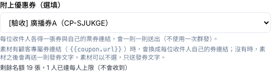
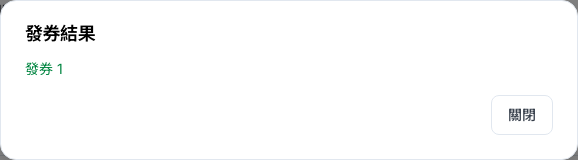
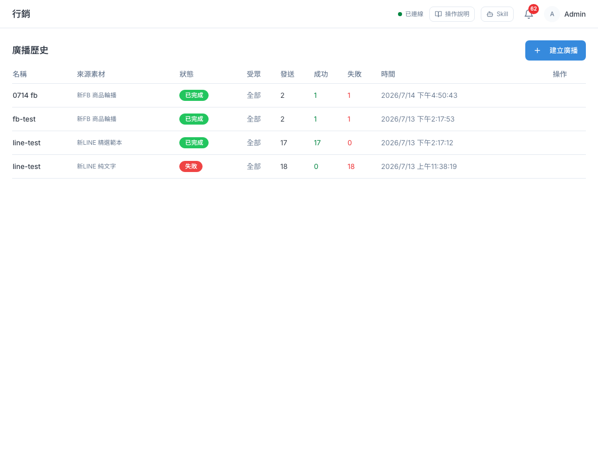
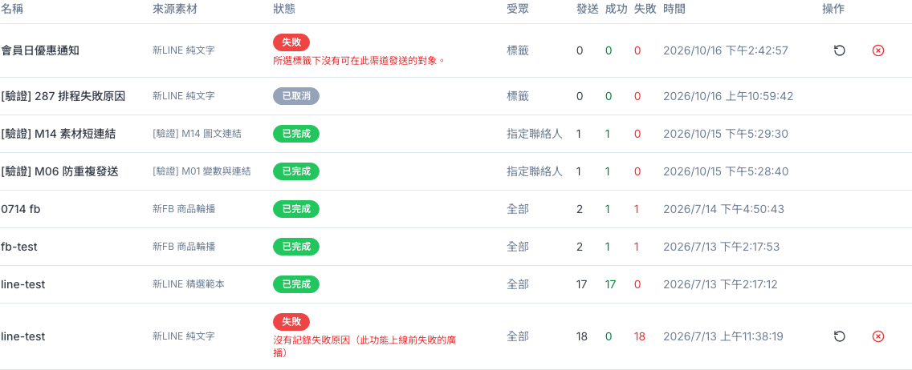

行銷活動、廣播與分群
把要發的訊息做成素材、用條件圈出受眾，再透過廣播一次發給一群聯絡人；行銷活動把相關的廣播收在一起，方便看合計成效。
1 這頁能做什麼
想一次通知很多客戶時（新品上市、週年慶、活動提醒），就用這一章的功能。從側欄「行銷與渠道 › 行銷」進來，底下有「行銷活動」「廣播」「受眾分群」「素材庫」四個項目。它們的關係像這樣：
行銷活動和受眾分群都只是「整理」用，本身不會發任何訊息。只有廣播會真的發訊息給客戶。
2 行銷活動
行銷活動就像一個資料夾：把同一波行銷的多次廣播歸在一起，進到活動裡就能看到這幾次廣播加起來的發送數、送達率、回覆數。
新增活動
- 側欄點「行銷 › 行銷活動」，右上角按「新增活動」。
- 填「名稱」，需要的話再填「描述」「開始日期」「結束日期」。
- 按「建立」。新活動會是「草稿」狀態。
| 欄位 | 說明 |
|---|---|
| 名稱（必填） | 活動名稱，例如「週年慶」。最多 200 字。 |
| 描述 | 給同事看的說明，最多 500 字。 |
| 開始日期／結束日期 | 只是記錄用。結束日期不能早於開始日期。 |
活動列表與活動詳情

點一張卡片會進到活動詳情，上方是 6 個成效數字：總發送、成功送達、失敗、送達率、回覆（含回覆率）、引發開案；下方「廣播記錄」列出掛在這個活動底下的每一次廣播。

活動右上角的按鈕可以改狀態：草稿可以「啟動」，進行中可以「完成」或「取消」。草稿狀態的活動，可以在列表卡片右下角的垃圾桶刪除。
要把廣播掛進活動，是在建立廣播時的「關聯活動」欄位選擇（見第 4 節）。
3 受眾分群
受眾分群用條件圈出一群聯絡人，例如「LINE 好友」「有 VIP 標籤的人」「這個月新加入的人」。建好之後，建立廣播時就能直接選這個分群當收件人。
- 側欄點「行銷 › 受眾分群」，右上角按「新增分群」。
- 填「名稱」，例如「LINE 好友」。
- 在「條件規則」選條件種類，再選右邊的值（例如「渠道類型」選「LINE」）。每一條條件都要有值，沒填完的話對話框下方會提醒你，「預覽人數」和「建立」也按不下去。
- 要再加條件就按「新增條件」。有多個條件時，用「條件邏輯」決定要「全部符合」還是「任一符合」。
- 按「預覽人數」，看看「符合人數」是不是你預期的數字。
- 確認無誤後按「建立」。

| 條件 | 意思 |
|---|---|
| 渠道類型 | 在某個渠道（LINE、Facebook、WebChat）有身分的聯絡人。目前選項裡沒有 Instagram。 |
| 標籤 | 身上有某個標籤的聯絡人。 |
| 建立日期（之後） | 在這天（含）之後才加入系統的聯絡人。 |
| 建立日期（之前） | 在這天之前加入的聯絡人。注意：選的那一天大多不包含在內，想包含某天請選隔天。 |
建好之後要知道的事
- 列表上的「N 人」是建立當下的人數，之後不會自己更新。實際發廣播時，系統會用條件重新計算一次，人數可能和列表不一樣。
- 分群建好後不能修改條件，建錯了請刪掉重建。刪除在每一列最右邊的垃圾桶。
4 建立廣播
廣播就是「把一則素材發給一群人」。建立廣播時可以先存成草稿，確認沒問題再發送；也可以設定排程時間，時間一到系統自動發。
- 先到「素材庫」把要發的訊息做好（見第 09 章）。要發給特定一群人的話，也先建好受眾分群（第 3 節）。
- 側欄點「行銷 › 廣播」，右上角按「建立廣播」。
- 填「名稱」，選「渠道」（要從哪個 LINE 官方帳號或 Facebook 粉專發出去）。
- 選「素材」。清單只會列出這個渠道平台的素材（選 LINE 渠道只看得到 LINE 素材）。選好後下方會出現「素材預覽」，確認內容是對的。
- 要掛進某個行銷活動，就在「關聯活動」選它；不需要就維持「無（獨立廣播）」。
- 選「受眾」：「全部聯絡人」、「受眾分群」或「依標籤篩選」。選「受眾分群」時，要在下方「選擇分群」選一個；選「依標籤篩選」時，要勾選至少一個標籤。
- 要順便發優惠券，在「附上優惠券」選一張券（見下方「附券廣播」）；不發券就維持「不附券」。
- 「排程發送」留空＝存成草稿；填了時間＝時間到自動發送。
- 按「建立」。


| 欄位 | 說明 |
|---|---|
| 名稱（必填） | 只給內部辨識用，客戶看不到。 |
| 渠道（必填） | 從哪個帳號發出去。素材庫只有 LINE 和 Facebook 的素材，選其他渠道時素材清單會顯示「此渠道尚無可用素材」。 |
| 素材（必填） | 要發的訊息。清單只列出和渠道同平台的素材，選項後面括號是素材類型。 |
| 關聯活動 | 把這則廣播掛進某個行銷活動，方便看合計成效。 |
| 受眾 | 發給誰。「全部聯絡人」是指在你選的渠道上的所有聯絡人；「受眾分群」發給一個已建好的分群；「依標籤篩選」發給身上有你勾選的任一標籤的人。 |
| 選擇分群 | 受眾選「受眾分群」時才會出現。括號裡的人數是分群建立當下的數字，實際發送會重新計算。 |
| 選擇標籤 | 受眾選「依標籤篩選」時才會出現。有勾選標籤裡任何一個的聯絡人都會收到。還沒有標籤的話，請先到「設定」建立標籤。 |
| 附上優惠券（選填） | 選一張進行中的優惠券，每位收件人各得一張券和自己的券連結。附券時「素材」可以不選，只送預設的發券文字。 |
| 排程發送（留空為草稿） | 只能選未來的時間。時間一到系統就會自動發送。 |
附券廣播：發給一群人，每人一張券
在「附上優惠券」選了券的廣播，會替每位收件人發一張券，訊息裡附上他自己的券連結。完整說明與影片見第 18 章 11-3。
| 情況 | 顧客收到什麼 |
|---|---|
素材裡有顧客專屬券連結 {{coupon.url}} | 只收到這一則，{{coupon.url}} 換成他自己的券連結。 |
素材裡沒有 {{coupon.url}} | 先收到素材，再收到一則發券文字與券連結。 |
| 沒選素材 | 只收到發券文字與券連結。Instagram 沒有素材，只能這樣發。 |
- 選了券之後，下方會顯示剩餘名額與已達每人上限的人數（見下圖）。名額不夠發給所有人時會跳出提醒，要勾「我了解名額不足，仍要建立」才能建立；系統依名單順序發到名額用完，其餘的人不會收到訊息。
- 素材有
{{coupon.url}}卻選「不附券」時，對話框會寫出原因，「建立」按不下去，因為沒附券就換不出連結。素材怎麼放券連結見第 09 章第 9 節。 - 附券廣播是一則一則送出，人數多時要花一點時間。廣播列表會標「附券」並顯示已發幾張券，按「發券結果」可以看失敗與跳過的人和原因。


5 發送與查看結果
「廣播」頁的「廣播歷史」列出所有廣播，以及每一則發給幾個人、成功幾個、失敗幾個。

| 狀態 | 意思 |
|---|---|
| 草稿 | 建好了但還沒發，也沒有排程。 |
| 已排程 | 設定了發送時間，時間到會自動發。 |
| 發送中 | 正在發送。發送期間列表每 5 秒自動更新，發完就會看到結果。 |
| 已完成 | 發送完畢。「成功」「失敗」欄是送達與失敗的人數。 |
| 失敗 | 整則廣播沒有發出去，或每一位對象都送失敗。例如當初選的分群已被刪除，系統會停止發送並標成失敗，不會改發給所有人。「失敗」下方的紅字是原因。 |
| 已取消 | 被取消，不會再發送。 |
立即發送與取消
「草稿」和「已排程」的廣播，在最右邊「操作」欄會有兩個小圖示按鈕（滑鼠移上去會顯示名稱）：
- 播放圖示＝「立即發送」：跳出「確定要立即發送嗎？訊息會馬上送給所選受眾，送出後無法收回。」，按確定就會馬上發給客戶。
- 圓圈叉叉圖示＝「取消」：取消這則廣播，之後不會再發送。已排程但想暫停的廣播，請用這個。

6 在訊息放客戶姓名（變數）
發送素材時，系統可以把素材文字裡的「變數」換成每位客戶自己的資料，例如「陳小明您好」。在素材的文字欄位裡，照下面的寫法打進去就可以（含兩層大括號、中間有一個英文句點）：
| 寫法 | 會換成 | 範例 |
|---|---|---|
{{contact.name}} | 聯絡人的顯示名稱（通常是對方的 LINE／FB 名稱） | 陳小明 |
{{contact.phone}} | 聯絡人的電話 | 0912-345-678 |
{{contact.email}} | 聯絡人的 Email | demo@example.com |
例如在 LINE 純文字素材寫「{{contact.name}} 您好，週年慶開跑囉！」，陳小明收到的就是「陳小明 您好，週年慶開跑囉！」。
{{contact_name}}（底線）是錯的，系統認不得，客戶會原封不動收到「{{contact_name}}」。另外，如果某位客戶沒有電話或 Email，{{contact.phone}}、{{contact.email}} 也會原樣顯示大括號給他，所以群發時建議只用 {{contact.name}}。